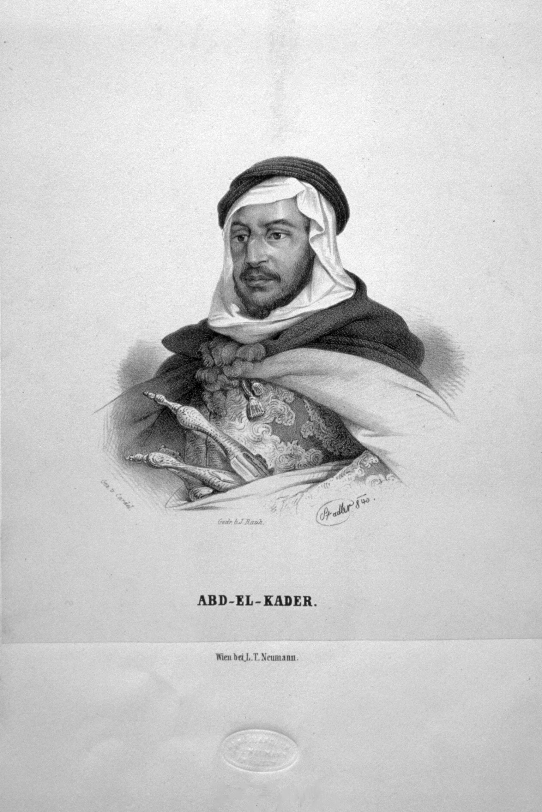

La résistance qui pense :quand la défaite ne suffit pas.
Abd el-Kader, Ibn Badis — deux siècles, une même opération : reconstruire un peuple que la défaite militaire laisse debout.
1832 — 1954
08 / 15
S02 · La question d’ouverture
المقاومة
al-muqāwama · la résistance
Avant les armes, une idée
Et si la guerre d’indépendance avait commencé bien avant 1954, par une idée plutôt que par un coup de feu ?
Hypothèse du module : avant que les armes parlent, la souveraineté algérienne a déjà été pensée et défendue : par l’épée d’Abd el-Kader d’abord, par la plume d’Ibn Badis ensuite.
S04 · L’homme

Abd el-Kader · lithographie · Vienne, années 1840
L’homme · v. 1808 — 1883
Un lettré à la tête de la résistance.
Né vers 1808, près de Mascara, dans une famille de notables religieux.
À partir de 1832, deux ans après la prise d’Alger, il prend la tête de la résistance dans l’Ouest.
S05 · Le concept-clé · l’État avant l’État
الدولةad-dawla · l’État avant l’État
Un État souverain, un siècle avant 1962.
Au traité de la Tafna (1837), la France reconnaît à l’émir les deux tiers de l’Algérie : capitale à Tagdempt, armée régulière, impôt, écoles. Une souveraineté réelle, reconnue par traité.
arméeimpôtécoles
⅔
du territoire
1837
Tafna
Tafna
1837
معاهدة
reconnu par traité
Tagdempt
capitale
Tlemcen
ouest
Mascara
base
Médéa
centre
S06 · Le cas pratique · document
La reddition
23 décembre 1847
Abd el-Kader · Damas · 1855
L’émir se rend au duc d’Aumale. Le sabre tombe : l’idée tient.
Le geste
Après quinze ans de guerre, Abd el-Kader remet son cheval de combat en échange d’une promesse d’exil en Orient.
La parole brisée
La France ne tient pas parole : l’émir est interné à Toulon, puis Pau, puis Amboise, jusqu’à sa libération par Napoléon III en 1852.
La suite
Exilé à Damas, il y écrit son œuvre et, en 1860, protège plusieurs milliers de chrétiens lors des massacres de la ville.
S07 · Le commentaire
Le concept du module
Le socle qui survit aux armes
Le socle · un
La foi
Même vaincu, l’émir reste un maître spirituel : à Damas, disciple d’Ibn Arabi, il compose Le Livre des Haltes, le Kitâb al-Mawâqif. Ni les armes ni l’exil n’atteignent la foi.
Le socle · deux
La langue
L’arabe porte la prière, le droit et le savoir. Un territoire s’occupe ; une langue se transmet, d’école en école.
Le socle · trois
La mémoire
Le récit qu’un peuple garde de lui-même, sa capacité à se penser comme une communauté. Une armée se détruit ; ce socle, lui, survit à la bataille. C’est lui qu’Ibn Badis reprendra.
Quatre-vingt-dix ans plus tard
1931
La résistance change d’arme. Plus de canons : une association, des écoles, des journaux. Le but reste intact. Rendre l’Algérie à elle-même.
S09 · La nation dans les têtes
Ibn Badis · Association des Oulémas · 1931
La nation dans les têtes
Abdelhamid Ibn Badis · le maître au Coran · photographie · v. 1930
Abdelhamid Ibn BadisAssociation des Oulémas · 5 mai 1931
Ibn Badis a pour armes des écoles, des journaux, des cours du soir. À Alger, au Cercle du Progrès, il fonde une association, ouvre des écoles libres, lance une presse en arabe. La nation se construit d’abord comme une langue, une histoire, une conscience partagées.
Devise de ralliement de l’Association : elle condense le programme des Oulémas : une nation définie par sa foi, sa langue et sa terre, contre l’assimilation. Définir la nation par une langue, l’arabe, c’est aussi en tracer les bords ; le module 11 y reviendra avec la question amazighe.
Le duel fondateur · l’échange de deux textes · 1936
Découvre-t-on une nation, ou la construit-on ?
Février 1936 · L’Entente
Ferhat Abbas
L’assimilationniste · la nation introuvable
« Si j’avais découvert la nation algérienne, je serais nationaliste … Cette patrie n’existe pas : je ne l’ai pas découverte. J’ai interrogé l’histoire, les vivants et les morts ; personne ne m’en a parlé. »
Avril 1936 · en réponse
Abdelhamid Ibn Badis
Le réformiste · la nation qu’on affirme
« Cette nation algérienne n’est pas la France, ne peut pas être la France, et ne veut pas être la France. »
Le nœud du module. Abbas croyait qu’on découvre une nation en fouillant les cimetières. Ibn Badis répond qu’on la transmet, par l’école, la presse, la langue. L’Association la fabrique jour après jour, dans une classe, dans les colonnes d’un journal.
S12 · Synthèse
Ce qu’on emporte de ce module
Deux temps, une même résistance — la pensée d’abord, le combat ensuite.
١Acquis · un
Un État
Abd el-Kader bâtit une souveraineté réelle dès 1832 : armée, impôt, capitale. Le modèle survit à la défaite de 1847.
٢Acquis · deux
Une identité
Ibn Badis relève le drapeau dans les têtes en 1931 : une langue, une foi, une histoire, portées par l’école et la presse.
٣Acquis · trois
Une transmission
De l’épée à la plume, puis jusqu’à 1954 : 23 ans séparent la fondation de l’AOMA de la Toussaint Rouge. La nation existait avant d’être armée.